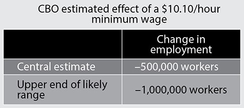
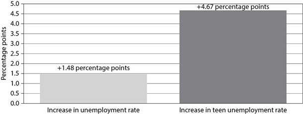

The following letter from a job applicant contains several
numbered blanks, each marked “ Select...”
Beneath each one is a set of choices. Indicate the choice
from each set that is correct and belongs in the blank.
Marco Santori
Manager
Flotsam Automotive, Inc.
224 Bolsa Ave.
San Diego, CA 92888
Dear Mr. Santori:
I read your
I am writing to apply for a
sales position at your dealership. I have enclosed my
résumé for your review as well as three letters of reference.
I am available to work immediately.
I have always been a car enthusiast. From an early age, I
took careful note of
I worked for
We repaired foreign and domestic models,
and I learned how a car works from the inside out.
While I have not worked at a car dealership before, I have
several years of sales experience. During college, I spent
three years working in the Sales Department of a large
furniture company, where I won an award for making the
most sales annually. During my senior year, I took a job for a
local technology company in a store that sells cell phones
and cell phone plans.
This position also required frequent
interaction with the public, and it was in many ways a salesbased position. I have received excellent feedback from the
customers and clients I serviced. However, I recently left
this position to pursue a career with a greater focus on
sales.
My degree in Psychology is, I believe, a distinct benefit for
a sales position at your dealership. Many of the courses I
took involved
This has given me a deeper
understanding of how people respond to different types of
incentives and triggers so I can analyze what inspires them
to buy.
I welcome
with you in person. Thank you for your consideration. I look forward to hearing
from you.
Sincerely,
Darius Miller
Use the following pair of passages to answer Questions 7–
16.
Adapted from Senate Floor
Statement on the Minimum Wage by
Senator Al Franken (D), April 30, 2014
1 Now, the economy is getting better. But raising the
minimum wage is about doing everything we can to
make sure it gets better for everyone. Last year, our
nation’s largest businesses saw record profits. The stock
market finished up last year up over 26 percent—its best
return since the 1990s. Raising the minimum wage is
about making sure that Minnesotans and workers across
the country get to be a part of the improving economy.
2 That’s why Minnesota has taken this important step. We
know that a strong minimum wage and a strong middle
class go hand in hand. That’s why I support raising the
federal minimum wage to a level that allows people to
work their way to a better life. For decades, the federal
minimum wage has lost its value. If the federal minimum
wage had kept pace with inflation since its peak value in
the 1960s, today it would be worth over ten dollars and
fifty cents an hour. Today, the federal minimum is just
seven dollars and twenty-five cents. So while families
have had to pay more—for food, rent, utilities, child care,
and education—the minimum wage hasn’t kept up.
3 Bringing the minimum wage back to a level that can
support a family is the first step in restoring the promise
that if you work hard, you can build a better life for
yourself and your family. Sometimes people ask why
raise the wage to $9.50 or $10.10. They say, why not
leave minimum wage workers alone to figure things out
themselves. Now, I don’t believe that raising the
minimum wage is going to solve all the problems that
working families face today. They need more than a
minimum wage—they need good jobs, good schools, and
good roads to provide a better future for themselves and
their children. But I support raising the minimum wage to
$10.10 because it’s a wage that says America values
work. It’s a minimum guarantee that anyone who shows
up 40 hours a week and ready to work should be able to
provide food and shelter for themselves and their
children and should not live in poverty.
4 Other people say that we don’t need to raise the minimum
wage because it’s not working families who earn the
minimum wage. Instead they say it’s mainly teenagers in
their first job who earn the minimum wage. But in fact,
the vast majority of the workers who would get a raise
under this bill are working adults, including
approximately 350,000 adults in Minnesota. One-quarter
are parents, including over 85,000 parents in our state.
The parents who would see a raise from the bill we are
considering are the parents of 14 million children Nationwide, one in five working mothers would see a
raise under this bill. And 6.8 million workers and their
families would be lifted out of poverty.
Excerpted from the Senate
Republican Policy Committee position
paper “Minimum Wage Increase Is
Bad for Jobs” (April 1, 2014)
CBO Predicts Job Loss from Minimum Wage Increase
1 The nonpartisan Congressional Budget Office expects the
Democrats’ minimum wage plan would reduce total
employment by about 500,000 workers—and by as many
as one million.

2 Democrats assert that raising the minimum wage will help
low-wage workers. On the contrary, a study last year
found that an increase in the minimum wage could
actually hinder the hiring of low-wage workers.
Economists at Texas A&M University estimated the loss in
job growth in each state under a minimum wage of $10
an hour. The researchers found that more than 2.3
million new jobs would be lost nationwide. A stateby-state breakdown showed job losses ranging from
5,100 in Alaska to 219,400 in Texas.
3 Not only would an increase in the minimum wage reduce
new hiring at a time when the country desperately needs
jobs, it would actually tip the balance in many states from
net employment gains to net losses. In all, 32 states that
are currently experiencing employment growth would
face a decrease in employment if the minimum wage
were increased to $10 an hour.
Who Gets Hurt the Most by Increasing the Minimum Wage?
4 New data from the Labor Department show that 58.8% of
all workers in 2013 were hourly workers, but only 4.3% of
them are at or below the federal minimum wage. That’s
down from 4.7% in 2012 and 13.4% in 1979.
5 About half of all minimum wage workers are less than 25
years old. Among employed teenagers (ages 16 to 19)
paid by the hour, about 20% earned the minimum wage
or less, compared with 3% of workers age 25 and over.
Additionally, only 2% of full-time workers were paid the
minimum wage.
6 The most recent unemployment rate for teenagers was
21.4 percent. An increase in the federal minimum wage
would be particularly harmful to this group struggling to
get on the employment ladder. When employer costs
are arbitrarily increased, such as with an increase
in the minimum wage, they become more likely to hire
experienced workers and less likely to take a chance on
young workers.
7 In 2013, 19 states had minimum wages above the federal
level of $7.25 per hour. An analysis of employment in
these states found a one-dollar increase in the minimum
wage would result in a 1.48 percentage point increase in
the unemployment rate. But a one-dollar increase
correlated to a 4.67 percentage point increase in teenage
unemployment rate.

Teens bear the brunt of an increase in unemployment
rate from a $1 hike in minimum wage.
7. Which is an accurate summary of paragraph 1 of Franken’s speech?
8. Which is a valid reason for increasing the minimum wage, according to Franken?
9. In paragraph 4, how does Franken distinguish his point
of view from those who disagree with his position?
10. Franken and the position paper offer
different interpretations of the data about the effect
of raising the minimum wage. Write one answer
choice letter in each of the boxes below to identify
the interpretation in each passage.
A. It will boost an ailing US economy by creating new jobs.
B. It will give businesses a reason to hire new workers.
C. It will raise Americans and their families out of poverty.
D. It will result in substantial job loss and slow job growth.
11. What do Franken’s speech and the position paper have
in common?
12. The bar graph supports the CBO text’s claim by showing
that raising the minimum wage would
13. What conclusion can you draw from both passages?
14. For each answer choice, decide if it is an implicit or an
explicit reason why Franken included paragraph 4 in his
speech. Then write the letter of each choice in the
correct box in the chart.
A. to imply that minimum-wage earners do not work
hard enough B. to refute the claim that most
minimum-wage earners are teenagers C. to
introduce a bill for raising the minimum wage to
$10.10 an hour D. to urge fellow senators to vote to
raise the federal minimum wage
15. Paragraph 7 of
the position paper builds upon paragraph 6 by
16. The phrase “it’s a wage that says America values work”
(Franken, paragraph 4) appeals to the audience’s
Use the following passage to answer Questions 17–22
Adapted from “What Should I Do if I See a Bear?” (US National Parks and Wildlife Website)
Avoiding an Encounter
1 Seeing a bear in the wild is a special treat for any visitor
to a national park. While it is an exciting moment, it is
important to remember that bears in national parks are
wild and can be dangerous. Their behavior is sometimes
unpredictable. Although rare, attacks on humans have
occurred, inflicting serious injuries and death. Each bear
and each experience is unique; there is no single strategy
that will work in all situations and that guarantees safety.
Most bear encounters end without injury. Following some
basic guidelines may help lessen the threat of danger.
Your safety can depend on your ability to calm the bear.
2 Following viewing etiquette is the first step to avoiding an
encounter with a bear that could escalate into an attack.
Keeping your distance and not surprising bears are some
of the most important things you can do. Most bears will
avoid humans if they hear them coming. Pay attention to
your surroundings and make a special effort to be
noticeable if you are in an area with known bear activity
or a good food such as berry bushes.
Bear Encounters
3 Once a bear has noticed you and is paying attention to
you, additional strategies can help prevent the situation
from escalating.
• Identify yourself by talking calmly so the bear
knows you are a human and not a prey animal.
Remain still; stand your ground, but slowly wave your
arms. Help the bear recognize you as a human. It
may come closer or stand on its hind legs to get a
better look or smell. A standing bear is usually
curious, not threatening.
• Stay calm and remember that most bears do not
want to attack you; they usually just want to be left
alone. Bears may bluff their way out of an encounter
by charging and then turning away at the last
second. Bears may also react defensively by woofing,
yawning, salivating, growling, snapping their jaws,
and laying their ears back. Continue to talk to the
bear in low tones; this will help you stay calmer, and
it won’t be threatening to the bear. A scream or
sudden movement may trigger an attack. Never
imitate bear sounds or make a high-pitched squeal.
• Make yourselves look as large as possible (for
example, move to higher ground).
• Do NOT allow the bear access to your food.
Getting your food will only encourage the bear and
make the problem worse for others.
• Do NOT drop your pack as it can provide
protection for your back and prevent a bear from
accessing your food.
• If the bear is stationary,move away slowly and
sideways; this allows you to keep an eye on the
bear and avoid tripping. Moving sideways is also
nonthreatening to bears. Do NOT run, but if the bear
follows, stop and hold your ground. Bears can run as
fast as a racehorse both uphill and down. Like dogs,
they will chase fleeing animals. Do NOT climb a tree.
Both grizzlies and black bears can climb trees. Leave
the area or take a detour. If this is impossible, wait
until the bear moves away. Always leave the bear an
escape route.
• Be especially cautious if you see a female with
cubs; never place yourself between a mother and
her cub, and never attempt to approach them. The
chances of an attack escalate greatly if she sees you
as a danger to her cubs.
4 Bear attacks are rare; most bears are only interested in
protecting food, cubs, or their space. However, being
mentally prepared can help you have the most effective
reaction.
17. Using the answer choice list, identify two details from
the passage that support the main idea—how to avoid a
bear attack. Write one correct answer choice letter in
each of the blank circles below.
18. Based on the passage, which of the following causeand-effect relationships is accurate?
19. Based on the evidence, which of the following is an
underlying assumption in the passage?
20. Which sentence from the passage states the main idea?
Use the following excerpt to answer Question 21:
Bear attacks are rare; most bears are only interested in
protecting food, cubs, or their space. However, being
mentally prepared can help you have the most effective
reaction.
21. How does the word however reinforce the author’s
purpose?
22. Based on the passage, why are mother bears especially
dangerous?